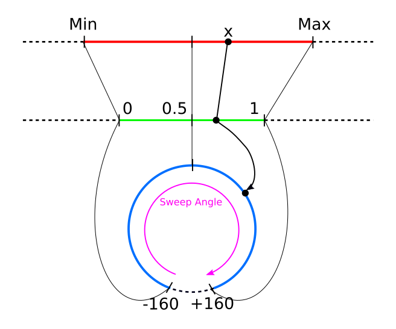

Flutter Tutorial - Custom User Input Knob using GuestureDetector
Flutter is an open source portable UI toolkit made by Google, which is great for cross platform app development. From a single codebase you can deploy your code to iOS, Android, Desktop and Web (see Hummingbird).
One of the amazing things about Flutter that no other cross platform app development tool can do is to define new custom UI elements using nothing but Dart code. This gives you the ability to highly customise the look and feel of your app, as you are no longer stuck with the built in components of iOS or Android, and you don't have to rely on 3rd party libraries. No longer do you have to tell your designer "No I can't find a component to do that, can we find something simpler".
In this Flutter tutorial series I will demonstrate how easy it is to create your own custom UI elements from scratch.
A common UI element, especially in music software applications is a knob.
The software synthesiser Massive. Note the 31 Knobs in the UI
In Flutter's widget catalogue there is no knob element for us to use out of the box, however it is easy to make your own (the full source code of the knob we'll make is avaliable here).
Here is the knob we will create in this tutorial:

TLDR:
I've published the code from this lesson as a [Flutter package](https://github.com/TomOConnor95/flutter-knob) named `flutter_knob`. If you want to skip the tutorial and just use this in your project simply add the dependency to you `pubspec.yaml`:
dependencies:
flutter:
sdk: flutter
flutter_knob: // Add it here
Import it using:
import 'package:flutter_knob/flutter_knob.dart';
Use it like:
Knob(value: _value, onChanged: _setValue)
And see [these instructions](https://github.com/TomOConnor95/flutter-knob/blob/master/README.md) for a working example.
Flutter already has a widget with a very similar behaviour to the one we are creating, the Slider widget (you can see the full source code for Slider on GitHub).
A slider and a knob have the same functionality: they control the value of a single parameter based on user input
The key difference between the slider and the knob we will create is visual: a slider converts a linear input guesture to a linear animation whereas we will convert a linear input guesture to a rotational animation (You can also make a more life-like version a knob which uses rotational input guesture instead, and this will be covered in a future tutorial).
I will assume you have a basic knowledge of Flutter, Dart, Stateless and Stateful widgets, and have seen Flutter's "hello world" app, the Counter App (created by running the terminal command flutter create . or using the command Flutter: New Project in vscode). (See this tutorial to get you started otherwise).
Basic setup
We will start from a simple testbed for our new custom widget using a Slider widget, and a Text widget to display the slider's value. (TODO: Make a GIF instead of static image)
The following code is based off the Counter App (See introduction).
File: main.dart
import 'package:flutter/material.dart';
void main() => runApp(MyApp());
class MyApp extends StatelessWidget {
@override
Widget build(BuildContext context) {
return MaterialApp(
home: MyHomePage(),
);
}
}
class MyHomePage extends StatefulWidget {
@override
_MyHomePageState createState() => _MyHomePageState();
}
class _MyHomePageState extends State<MyHomePage> {
double _value = 0.0;
void _setValue(double value) => setState(() => _value = value);
static const double minValue = 0;
static const double maxValue = 10;
@override
Widget build(BuildContext context) {
return Scaffold(
appBar: AppBar(
title: Text('Flutter Tutorial'),
),
body: Center(
child: Column(
mainAxisAlignment: MainAxisAlignment.center,
children: <Widget>[
Slider(
value: _value,
onChanged: _setValue,
min: minValue,
max: maxValue,
),
Text(
'Value: ${_value.toStringAsFixed(3)}',
),
],
),
),
);
}
}
I'll now explain the key changes that were made to make this testbed.
In the _MyHomePageState widget's state we have a _value attribute used to store the current value of the slider and a _setValue function used by the slider to modify this value.
class _MyHomePageState extends State<MyHomePage> {
double _value = 0.0;
void _setValue(double value) => setState(() => _value = value);
...
The Slider widget was added it to the _MyHomePageState widget's build method, and passed _value and _setValue as parameters. Setting the range of the slider was done using the optional parameters min and max.
Slider(
value: _value,
onChanged: _setValue,
min: minValue,
max: maxValue,
),
The Text widget was also passed _value as a parameter, however we first rounded it to 3 decimal places.
Text(
'Value: ${_value.toStringAsFixed(3)}',
),
The design bit: Custom knob widget appearance
First we will design a simple knob. There are two approaches to making a new UI widget from scratch:
- Composing together other widgets (left). This is the easiest option, used here.
- Using the
CustomPaint widget (right) to paint the widget at a low level out of lines, circles, arcs etc. This is the most powerful option and will be covered in a future tutorial.
We will make the knob out of a circle and an arrow icon. Circles can be easy made by wrapping a ClipOval widget around a Container. This can be customised much more and you can use whatever widget or design you want, but we'll keep it simple for now.
ClipOval(
child: Container(
color: Colors.blue,
child: Icon(Icons.arrow_upward,
color: Colors.white,
size: 50,
)
)
),
Simple behaviour: Custom Knob Widget - Continuous
In this tutorial we will make the knob respond to continuous values. The next tutorial will address discrete values which a bit trickier to handle.
There are two key parts to making a knob. Firstly we need the knob widget to respond to the _value attribute, and then we need to make it respond to the user input by calling _setValue method.
Part 1: Visually respond to _value
To make our knob rotate we can simply wrap it in a rotation widget.
It needs to rotate from a minimum angle to a maximum angle as the value changes from minValue to maxValue.
To do this we will need to do a little bit of maths so let's import Dart's math library at the top of our file:
import 'dart:math';
This lets us use pi to get the value Pi (3.1415…)
As the arrow marker starts pointing vertically, set the minimum angle as -160° and the maximum angle as +160°. The total sweep angle is therefore 320° (See diagram). We want the final angle to be in radians.
We can use linear interpolation to combine minValue, maxValue and _value to get a value between 0 and 1:
double _normalisedValue = (_value - minValue)/(maxValue - minValue)
Next use _normalisedValue variable calculate the desired angle. We are again using linear interpolation to convert to an angle in degrees, then multiplying by 2 * pi /360 to convert to radians.
double _angle = (minAngle + (_normalisedValue*(sweepAngle)) * 2 * pi / 360;

We can do the calculation at the start of the build method:
class _MyHomePageState extends State<MyHomePage> {
double _value = 0.0;
void _setValue(double value) => setState(() => _value = value);
static const double minValue = 0;
static const double maxValue = 10;
static const double minAngle = -160;
static const double maxAngle = 160;
static const double sweepAngle = maxAngle - minAngle;
@override
Widget build(BuildContext context) {
double _normalisedValue = (_value - minValue)/(maxValue - minValue);
double _angle = (minAngle + _normalisedValue * sweepAngle) / 360 * 2 * pi;
return Scaffold(
...
We can then simply wrap our widgets in a Transform.rotate() widget, and pass it our new computed angle:
Transform.rotate(
angle: _angle,
child: ClipOval(
child: Container(
color: Colors.blue,
child: Icon(Icons.arrow_upward,
color: Colors.white,
size: 50,
)
)
),
),
Now if we move the slider, our knob should respond correctly. (TODO: GIF). Here is the full source code so far incase you've got lost.
This pattern of using a slider (or several sliders) to test the behaviour of another UI element is very useful when testing the new UI element, as it allows you to get the visual behaviour correct before working on the actual user input.
Part 2: Respond to user input
In this section we will make the knob actually respond to being dragged. We will make the knob such that it rotates when the user drags it in a vertical direction (More complicated behaviours are possible, such as making the knob rotate as the user drags in a circle around it, or adding momentum and viscocity to the knob, but we'll save these for another time).
The first step is to wrap our knob in a GestureDetector, and provide an onVerticalDragUpdate function which sets what happens when the user drags the knob in a vertical direction.
GestureDetector(
onVerticalDragUpdate: (DragUpdateDetails details) {
double changeInY = details.delta.dy;
print(changeInY);
// Respond to the changeInY
},
child: Transform.rotate(
angle: _angle,
child: ClipOval(
...
),
),
),
Now when you drag on the knob, you should see values being printed in the debug console. The values represent the number of pixels that you have moved. You'll notice that dragging upwards gives a negative value, so we need to account for this by changing the logic to double changeInY = -details.delta.dy;
(See GIF)
Now we need to use these changeInY value to actually change the angle. ç
- Convert the
changeInY value to a change in _value.
- Add this
changeInValue to the current value.
- Limit the resulting value to be between 0 and 1.
- call
_setValue with the new value
And here is how to acheive this in the code:
Define a constant distanceToAngle which is the number needed to map from changeInY to changeInValue:
class _MyHomePageState extends State<MyHomePage> {
...
static const double distanceToAngle = 0.007 * (maxValue - minValue);
...
Now we use this in the onVerticalDragUpdate method:
onVerticalDragUpdate: (DragUpdateDetails details) {
double changeInY = - details.delta.dy;
double changeInValue = distanceToAngle * changeInY; // Note the negative sign
double newValue = _value + changeInValue;
double clippedValue = min(max(newValue, 0), 1);
_setValue(clippedValue)
},
Now we have everything set up! Drag the knob and see that the value changes correctly!
Moving the knob into a Stateless Component
Now that we have a fully functioning knob, let's tidy up our code and move the knob into its own component so that it can be used wherever we like in our Flutter projects.
Create a new file for the knob in the lib/ folder, and make a basic stateless widget
File: lib/knob.dart
import 'package:flutter/material.dart';
import 'dart:math';
class Knob extends StatefulWidget {
// Parameters go here
@override
State<StatefulWidget> createState() => KnobState();
}
class KnobState extends State<Knob> {
@override
Widget build(BuildContext context) {
return (
// The widgets to build go here
);
}
}
When our knob was written in the same widget as the rest of the page we could use the variables _value, _setValue, minValue and maxValue in the build method of the knob. Now that we are extracting the knob to its own widget, we need to add some parameters to the widget to pass in these values. It is important to get the types right for each of the parameters as Dart is a strongly typed language.
class Knob extends StatefulWidget {
// Define the parameters of this widget
final double value;
final double min;
final double max;
// ValueChanged<type> is a type built into Dart for a function that changes a value of type <type>
final ValueChanged<double> onChanged;
// Define a constructor for the widget which uses these parameters
Knob({this.value, this.min = 0, this.max = 1, this.onChanged});
@override
State<StatefulWidget> createState() => KnobState();
}
Copy the render code for the knob from main.dart into the build method of the new widget, and move the constants minAngle, maxAngle and sweepAngle into the KnobState. You must change the variables used in the render method to the widget's parameters:
_value -> widget.value_setValue -> widget.onChangeminValue -> widget.minmaxValue -> widget.max
class KnobState extends State<Knob> {
// These are static constants because they are in internal parameters of the knob that
// can't be changed from the outside
static const double minAngle = -160;
static const double maxAngle = 160;
static const double sweepAngle = maxAngle - minAngle;
@override
Widget build(BuildContext context) {
// distanceToAngle now depends on potentially non-constant parameters,
// so must be defined in the build method
double distanceToAngle = 0.007 * (widget.max - widget.min);
double _normalisedValue = (widget.value - widget.min)/(widget.max - widget.min);
double _angle = (minAngle + _normalisedValue * sweepAngle) * 2 * pi / 360;
return GestureDetector(
onVerticalDragUpdate: (DragUpdateDetails details) {
double changeInY = -details.delta.dy;
double changeInValue = distanceToAngle * changeInY;
double newValue = widget.value + changeInValue;
double clippedValue = min(max(newValue, widget.min), widget.max);
widget.onChanged(clippedValue);
},
child: Transform.rotate(
angle: _angle,
child: ClipOval(
child: Container(
color: widget.color,
child: Icon(
Icons.arrow_upward,
color: Colors.white,
size: 50,
)
)
),
),
);
}
}
Now import Knob in main.dart, and use it in the build method. The import 'dart:math'; statement should be moved into knob.dart.
import 'package:flutter/material.dart';
import './knob.dart';
...
class _MyHomePageState extends State<MyHomePage> {
double _value = 0.0;
void _setValue(double value) => setState(() => _value = value);
static const double minValue = 0;
static const double maxValue = 10;
@override
Widget build(BuildContext context) {
return Scaffold(
appBar: AppBar(
title: Text('Flutter Tutorial'),
),
body: Center(
child: Column(
mainAxisAlignment: MainAxisAlignment.center,
children: <Widget>[
Knob(
value: _value,
onChanged: _setValue,
min: minValue,
max: maxValue,
),
Slider(
value: _value,
onChanged: _setValue,
min: minValue,
max: maxValue),
Text(
'Value: ${_value.toStringAsFixed(3)}',
),
],
),
),
);
}
}
Now that we've made the slider into its own widget, it is very easy to use anywhere else in your apps that you might use a slider.
Finishing touches
To make the Knob widget more customisable we can add some extra parameters to change the color and size of the knob:
class Knob extends StatefulWidget {
...
// Two extra parameters to make the widget more easy to customise
final double size;
final Color color;
...
// Add these parameters to the constructor
Knob({this.value, this.min = 0, this.max = 1, this.onChanged, this.color = Colors.blue, this.size = 50});
...
}
Use the color parameter to set the color of the Container in the render method. Wrap all of the widgets in the render method in a Center widget and a Container widget, and use the size parameter to set the height and width of the container, and the size of the Icon.
class KnobState extends State<Knob> {
...
@override
Widget build(BuildContext context) {
...
double size = widget.size;
return Center(
child: Container(
width: size,
height: size,
child: Transform.rotate(
angle: _angle,
child: GestureDetector(
onVerticalDragUpdate: (DragUpdateDetails details) {
...
},
child: ClipOval(
child: Container(
color: widget.color,
child: Icon(
Icons.arrow_upward,
color: Colors.white,
size: size,
)
)
),
),
),
),
);
}
Conclusion
I hope you enjoyed this article, got everything to work. If you got stuck at any point the full source code is avaliable here.
There's lots more we can do to customise this and make it more visually pleasing. The _normalisedValue variable we used in our calculations is particularly useful in modifying other properties of the knob, such as color, opacity, size, border-width and shape. It is also possible to replace the face of the knob with images or even gifs!! We will try out some of these approaches in future tutorials. But for now, do some experimenting for your self and see what you can come up with!